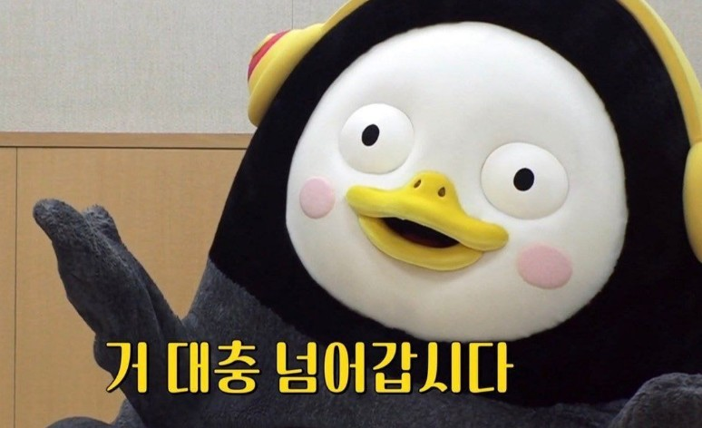

So are you happy now
Finally happy now are you
뭐 그대로야 난
다 잃어버린 것 같아
모든 게 맘대로 왔다가 인사도 없이 떠나
이대로는 무엇도 사랑하고 싶지 않아
다 해질 대로 해져버린
기억 속을 여행해
우리는 오렌지 태양 아래
그림자 없이 함께 춤을 춰
정해진 이별 따위는 없어
아름다웠던 그 기억에서 만나
Forever young
우우우 우우우우 우우우 우우우우
Forever we young
우우우 우우우우
이런 악몽이라면 영영 깨지 않을게